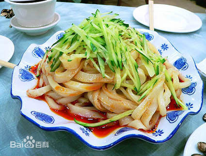
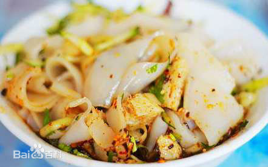

基本介绍
酿皮是流行于中国西北地区的一种传统特色美食，绵软润滑、酸辣可口、爽口开胃。在青海、甘肃、宁夏、陕西、内蒙古河套等地颇受喜爱。酿皮是用面粉浆汁蒸出来的面皮。
酿皮有两种，一种是普通酿皮，一种是高担酿皮。“酿皮”和凉皮是同一种食物，但因不同地区方言的关系，形成了如今二者的区别。
制作方法
原料：（制100碗）面粉10公斤，精盐500克，碱面10克，绿豆芽（焯熟）、熟菜籽油、酱油、香醋、芝麻酱、油泼辣子等各适量。
步骤：分为制面浆、笼蒸、切条、调味四道工序。
（1）制面浆。将面粉放入盆中，分次加水，第一次加水10公斤，用木勺搅拌成稠浆糊，加入精盐250克，继续加水5公斤，再用力搅拌成稀浆糊，最后再加水1公斤，同时把碱面10克化成水倒入盆中，再继续搅拌均匀，用勺扬起，能拉成条，即成面浆。
（2）笼蒸。蒸笼里铺上净屉布，臼入薄薄一层面浆，旺火蒸10分钟即成。
（3）切条。将面皮翻倒到案上，抹上熟菜籽油，摞放到案上，晾凉。切时把面皮平铺到案上，左手展平，拇指拳回，轻摁住酿皮，右手持刀直切。左手挨住刀不停移动，右手所持的刀不停地切着。1张酿皮一般可以切100－150刀。
（4）调味。一般按每碗100克装。酿皮加面精块放入碗中，然后调入精盐汤、蒜汁、香醋、芝麻、花生、芹菜、黄瓜丝、西红柿末、炸辣椒、辣椒油等即成（根据制作者的不同，放入的调味料的种类也不尽相同）。
l历史渊源
唐朝开元间，玄宗李隆基执柄国政，天下太平。天水西南稍子坡上有玄宗的祖坟，坡下西头有户柳姓人家，祖孙三代守护着唐皇祖坟，远在长安的唐皇后裔感念柳家护坟之恩，每年来天水祭祖，都要赐赏一些钱物给柳家，一来二往，交情日深。柳家护坟尽心尽力，唐皇祖坟安然无恙。稍子坡东头有个何家窑，有何姓父子二人烧炭为 生。这一年腊月头，何老汉请人说媒，将柳家的小女柳兰娶过门，给儿子何林做了媳妇。父子砍柴烧炭，媳妇张罗茶饭，小日子还算滋润。过完正月的一天，何林随父上山砍柴，晌午时分，柳兰揉面准备擀面。突然地声隆隆，顷刻间地动山摇，一场大地震发生了，柳兰随手将面团扔进水缸，盖上，抽身跑出厨房一看，三间瓦房不见了，接着身后哗啦一阵响，茅草厨房也塌架了，一看这景象，柳兰顿时瘫在地上。
冒着余震的危险，何家父子跌跌撞撞赶回一看，家院夷为平地，媳妇倒在院中，何林扑上前，摇着媳妇的双臂大喊：“柳兰，柳兰，你不能走啊！”这一喊，柳兰醒过来了，父子破涕为笑，三人幸免于难。这次地震，柳家全家遇难，何家父子帮柳兰安丧了亲人后，回到何家窑。重建家园要吃饭呀！从土里刨的一点儿白面、杂和面很快吃完了，柳兰一筹莫展。忽地一下她想起来那天揉的一块面还在缸里，便急忙伸手去捞。然而面团没有了，捞上来一把滑溜溜的面串，缸里是一些稀糊糊汤，一闻还有点儿酸，面团被泡发酵了。
想烙馍，没有干面掺和，这咋办呢？柳兰在酸糊汤中加了些土碱，搅和时一股麦香溢出，她索性架起炭火，将面糊舀在蒸笼屉布上蒸了起来，不料蒸出的面饼十分香润，放凉吃更是筋柔适口。不大一会儿，面糊全被蒸成了薄面饼，摆满了大案板。最后，柳兰见那滑溜溜的面串扔了怪可惜，她如法炮制，竟蒸出了全身是大蜂窝的发面馍，吃起来醇香筋道。
何家父子从窑上回来了，柳兰端出两碗饭来。这饭的上面搁着黄葱葱的大蜂窝片和煮熟的灰菜干，为了让父子俩多吃几次面饼，柳兰多放了些灰菜干，上面调了盐、蒜泥和辣椒，父子搅拌后吃得眉开脸笑。何林边吃边问：“啥饭这么好吃？”柳兰说：“这是白面糊糊蒸的酿皮儿。”“这片片是咋做的？”“麦子快熟时，捋上一把放嘴里嚼，嚼到最后剩下能吹泡泡的，不就是面筋吗！”
后来，何林想吃酿皮了，柳兰特意和好一块面，泡在水中，又觉得泡面费时，她干脆挽起袖子，伸手搓洗起来，这样洗出的酿皮和面精更加好吃。柳兰又在调料和配菜上做了改进，认为酿皮应以芝麻酱为主，突出香味。她将炒好的芝麻磨细，加水酌量，用炒锅炭火煎熬，等麻香溢出时，水油渣分离冷却备用；油辣子中加入小茴香粉、姜粉、花椒、大料粉；醋中浸泡草果、桂皮。配菜方面她用菠菜、葫萝卜、绿豆芽、黄瓜等，增色不少，口感不错。
再说强震发生后，柳兰何林小两口担起守护唐皇祖坟的责任。第二年清明节一早，柳兰做好酿皮，往竹笼里放了两碗，同何林一起给父母坟前献上一碗后，来到唐皇祖坟献上酿皮，二人坐等唐皇后裔祭扫祖坟。
晌午，秦陇王李玠一干人马奉玄宗之命到了稍子坡，他们已是人困马乏，祭奠过程中，早被那奇香四溢的酿皮勾得直咽口水。叩过头后，十几人你一口我一口品尝了酿皮，都说天水酿皮好吃。当下，秦陇王李玠决定送柳兰进宫。不多时日，柳兰把自己做酿皮的技艺悉数传授给了后宫厨子。
这时，玄宗的元献贵妃杨氏正怀着肃宗李亨，吃啥吐啥。一天中午，小太监头顶玉盘，盘内玉碗玉筷，碗中是红绿鲜艳，奇香飘溢的酿皮，跪献了上来，杨氏食后大喜。此后，杨氏每餐必食酿皮。受元献贵妃的影响，九重禁宫的皇后、妃嫔、公主、才人、侍女，甚至亲王驸马及三品以上的官员都以食酿皮为快事，玄宗御宴上，酿皮成为不可或缺的佐酒佳肴。不久，酿皮从宫内传到市井，在秦晋一带兴旺起来。这时，柳兰回到阔别一年的天水，她在家做酿皮，何林在稍子坡下卖酿皮，何老汉颐养天年。后来何林的儿子继承父业，干脆到天水城定居，何家酿皮声名大噪。
话说到了天宝年间，玄宗沉迷于酒色之中，国相弄权、安禄山作乱，国势日衰，他把一切烦恼推给了肃宗皇帝。又在他七十多岁时尽行遣散了后宫三千佳丽，这样，酿皮从天水传到长安，又从长安传到大江南北。